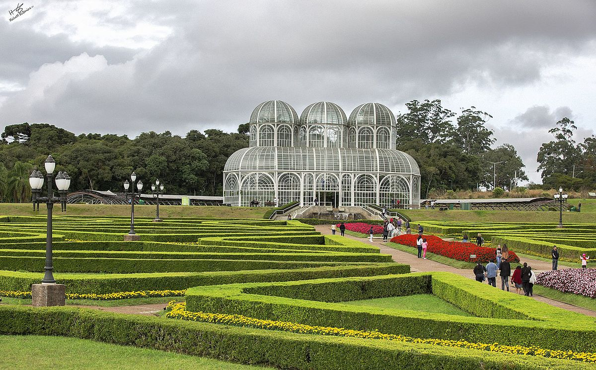
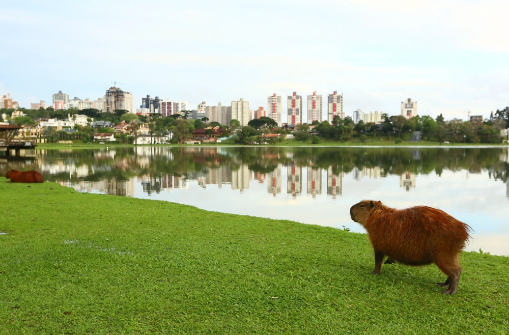
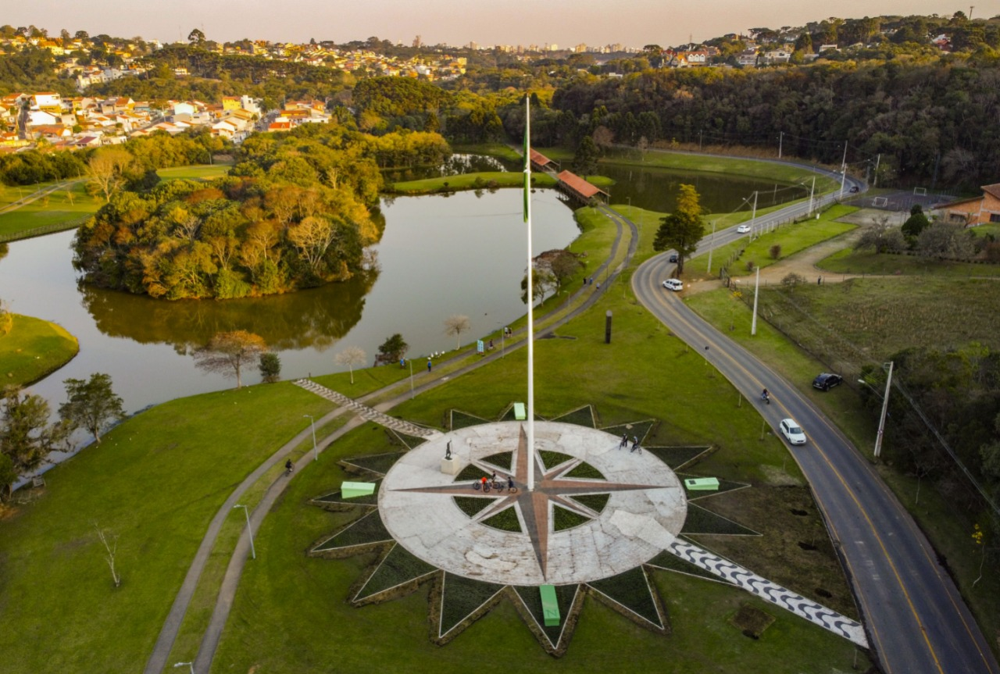
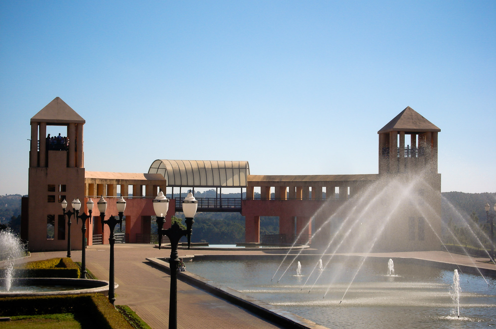
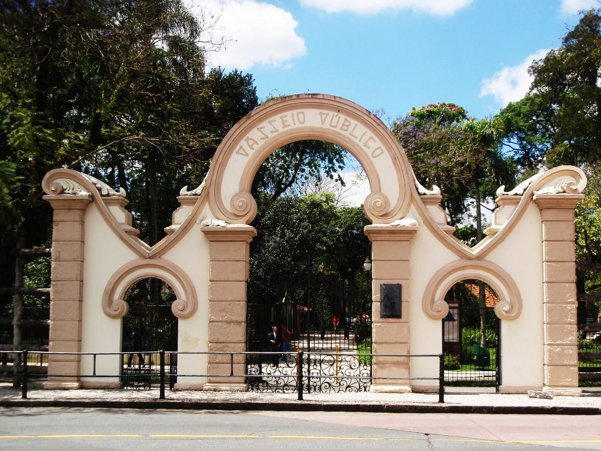

Jardim Botânico
O Jardim Botânico de Curitiba é um espaço verde exuberante inaugurado em 1991 como homenagem à urbanista
francesa Francisca Maria Rischbieter. É um lugar ideal para quem deseja relaxar em meio à natureza e conhecer um
pouco mais sobre a flora brasileira. Seu principal atrativo é a estufa de vidro inspirada no Palácio de Cristal
de Londres, que abriga espécies vegetais da Floresta Atlântica, como orquídeas e bromélias. Além disso, conta
com trilhas para caminhadas, lagos, pontes e espaços para piquenique. É um destino imperdível para quem visita a
cidade.
 Como chegar
Como chegar
Parque Barigui
O Parque Barigui é o maior parque de Curitiba, com mais de 1,4 milhão de metros quadrados de área. É um lugar
ideal para quem busca tranquilidade e lazer em meio à natureza, com trilhas, lagos, playgrounds, quadras
esportivas e pistas de bicicleta. É famoso por abrigar uma grande população de capivaras e possui uma estrutura
completa de serviços. É um destino imperdível para quem visita a cidade.
Como chegar


Parque Tingui
O Parque Tingui é um dos principais parques de Curitiba, com mais de 380 mil metros quadrados de área. É um
lugar ideal para quem busca tranquilidade e lazer em meio à natureza, com trilhas, áreas para piquenique,
quadras esportivas e mirantes. Também abriga o Memorial Ucraniano, que homenageia a cultura e tradição dos
imigrantes ucranianos. É um destino imperdível para quem visita a cidade.
Como chegar
Parque Tanguá
O Parque Tanguá é um dos mais belos parques de Curitiba, com mais de 235 mil metros quadrados de área. O parque
é conhecido por seus lagos interligados por uma cascata, um mirante com vista para a cidade, um túnel artificial
e uma ponte suspensa. É um lugar ideal para relaxar e desfrutar da natureza em meio à cidade, além de ser
frequentemente utilizado para a realização de eventos. É um destino imperdível para quem visita Curitiba.
Como chegar


Passeio Público
O Passeio Público é um dos mais antigos parques de Curitiba, inaugurado em 1886, com mais de 70 mil metros
quadrados de área. O parque é conhecido por seu lago com pedalinhos, seu jardim francês e suas áreas para
piquenique. O parque abriga uma grande variedade de animais e é um lugar ideal para um passeio em família ou
para relaxar em meio à cidade. É um destino imperdível para quem visita Curitiba.
Como chegar